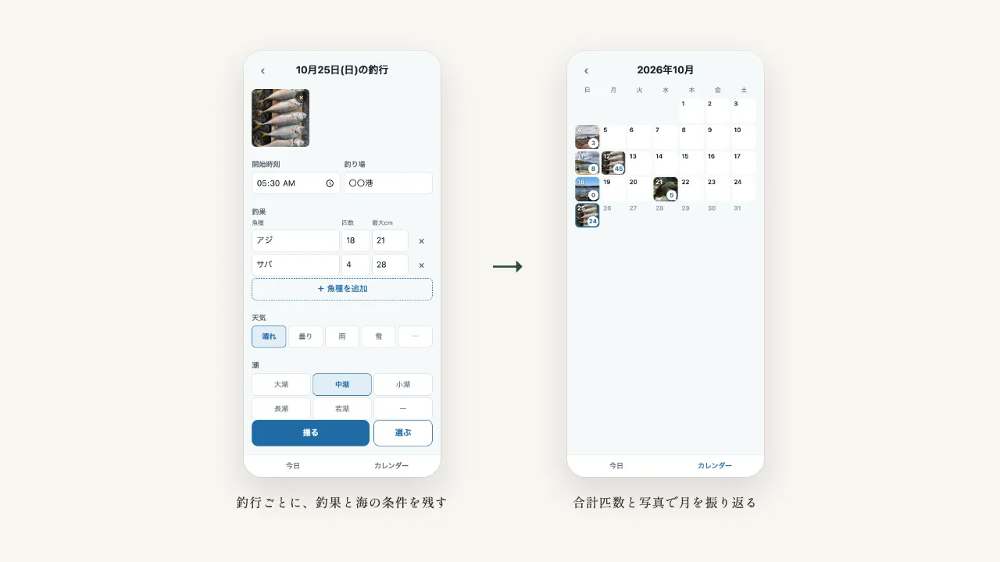
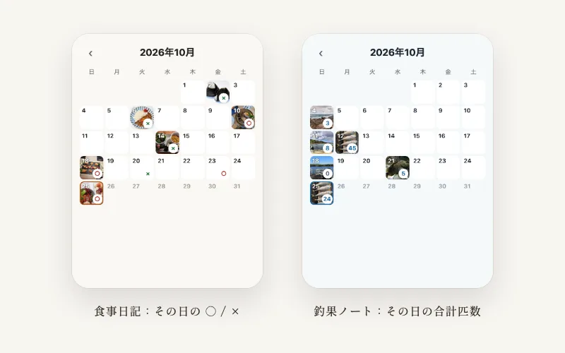

Case Study — Web App
釣果ノート
釣りに行くたびに、釣れた魚と匹数・サイズ、釣り場、天気・潮・風、仕掛けを記録する、スマホ向けの日記アプリです。先に作った食事日記と同じ土台の上に作った2つ目のアプリで、記録はスマホの中にだけ保存し、サーバーには送りません。受注した案件ではなく自分で企画した Web アプリです。
動いている様子を見る
Problem
課題
釣りは、同じ釣り場でも天気・潮・風・時間帯で結果が大きく変わります。次の釣行に生かすには条件と釣果をセットで残す必要がありますが、メモ帳に書くと項目がばらばらになり、見返しにくくなります。
- 1日に朝と夕方など何回か釣りをするので、1日1件の日記では足りない
- 釣り場や魚種、仕掛けを毎回入力するのは手間がかかる
- 食事日記とは記録する項目がまったく違うが、写真・メモ・カレンダーといった仕組みは同じ
Approach
アプローチ
釣行1回を記録1件とし、1日に何件でも追加できるようにしました。釣り場・魚種・仕掛けは過去に入れた値を候補に出し、今日の釣行なら開始時刻も自動で入ります。入力は自動で保存されるので、保存ボタンはありません。カレンダーには、その日の写真と合計匹数を出します。釣りに行ったのに釣れなかった日は「0」を表示し、行かなかった日と見分けられるようにしました。
食事日記を作るときに、記録の保存・写真・メモ・カレンダーを、アプリに固有の部分から切り分けておきました。釣果ノートは、その共通の土台の上に、釣りに固有の項目と画面だけを足して作っています。カレンダーの部品は「食べすぎ」も「匹数」も知らず、各日に出す印はアプリ側が渡します。色も共通の部品はそのままに、配色の値だけを青系に差し替えました。
仕上げに、AI のエージェントを検証係として立て、ブラウザ操作で不具合を探させては直す作業を、不具合がなくなるまで繰り返しました。電波の弱い釣り場でボタンを連打すると記録が二重にできる、日付をまたいでも「今日」が前日のまま、といった7件が見つかり、6件を直しています。動作は51件の自動テストで確かめ、コードを更新するたびに GitHub で自動実行しています。実装は、AI のコーディング支援（Claude Code）を使って進めました。

Result
成果
公開済みで、iPhone のホーム画面に追加して使えることを実機で確かめました。公開して間もないため、自分以外の利用者はまだいません。共通の土台があったため、2つ目のアプリでは釣りに固有の部分に集中できました。今は記録がスマホの中にしかないので、次はログインとクラウド保存を加え、2つのアプリでまとめて機種変更に対応する予定です。
コードと設計の詳しい説明は、GitHub のリポジトリで公開しています。